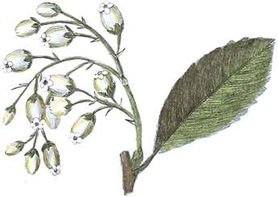

<main>
    <section>
        <article class="img">
            <div>
                
            </div>
            <div>
                
            </div>
        </article>
        <article class="content">
            <h4>ყველა უნდა იცოდეთ! - რა საფრთხეს გვიქმნის ტყვია, რომელიც კოსმეტიკაში ხშირად გამოიყენება</h4>
            <p>ხარისხიანი კოსმეტიკა ძვირი ღირს, შესაბამისად მომხმარებელთა დიდი ნაწილი მას ფასის მიხედვით არჩევს, თუმცა
                არიან მომხმარებლები, რომლებიც არც ძვირადღირებულ და ბრენდირებულ მაღაზიების პროდუქციის ხარისხს ენდობიან.
                ბევრი თვლის, რომ დეკორატიული კოსმეტიკის შემთხვევაში მისი მდგრადობა ხარისხის მაჩვენებელია, გარდა ამისა,
                თუ პროდუქციაზე ალერგია არ აქვთ, ფიქრობენ, რომ კოსმეტიკური საშუალებები ამ შემთხვევაში უსაფრთხოა, თუმცა
                ყველაზე დიდ საფრთხეს დეკორატიული კოსმეტიკის შემადგენლობაში ტყვია და მძიმე მეტალები წარმოადგენს.</p>
            
            <h4>სახის კანის მოვლა!!</h4>
            <p>სახის კანის მოვლა ყოველთვის მნიშვნელოვანია, განსაკუთრებით კი შემოდგომა-ზამთრის სეზონზე, როდესაც ცივი
                ამინდი მასზე უარყოფით ზეგავლენას ახდენს. ამ დროს კანი მარტივად ღიზიანდება და შრება. ქუჩიდან თბილ
                შენობაში და პირიქით გადაადგილება, კანს სტრესულ მდგომარეობას უქმნის, რისი შედეგებიც ეტაპობრივად
                თვალსაჩინო ხდება.</p>
            <ol>
                <li><span>დატენიანება</span><br>კანზე ზრუნვა დატენიანებით იწყება. კანის ტიპის შესაბამისი დამატენიანებლის
                    გამოყენება ყველა სეზონსა და გარემო პირობებშია აუცილებელი. უმჯობესია თუ ზამთრისთვის ზეთოვანი
                    შემადგენლობის დამატენიანებელს აარჩევთ, რომელიც ცივ ამინდში იმაზე უკეთ დაგიცავთ, ვიდრე წყალზე
                    დაფუძნებული საშუალებები.</li>
                <li><span>მზისგან დაცვა</span><br>შორს ნუ გადადებთ მზისგან დამცავ საშუალებებს. სიცივე, იმას არ ნიშნავს
                    რომ ნაცრისფერი ღრუბლები მზის გამოსხივებისგან გვიცავს. სახლიდან გამოსვლამდე და მაკიაჟის წასმამდე
                    10-15 წუთით ადრე დაიტანეთ სახის კანზე ცოტაოდენი მზისგან დამცავი საცხი.</li>
                <li><span>ხელების მოვლა</span><br>ხელის კანს განსაკუთრებული ზრუნვა სჭირდება, რადგან მას ყველაზე ხშირი
                    შეხება აქვს წყალთან და ტემპერატურის ცვლილებასთან. დაიტენიანეთ ხელები ყოველ ჯერზე, როდესაც ამის
                    საშუალება გექნებათ. (დღეში ორჯერ მაინც)</li>
                <li><span>წყალი</span><br>სხეულსა და სახის კანის სიჯანსაღისთვის მხოლოდ ზედაპირული ზრუნვა არ კმარა.
                    მთავარი თქვენი ორგანიზმის მდგომარეობაა. იმისათვის რომ კანი არ გამოგიშრეთ და თავიდან აირიდოთ
                    გაუწყლოვანება, მიიღეთ დღეში 2-3 ლ წყალი.</li>
                <li><span>კვება</span><br>ორგანიზმს სასარგებლო მინერალებით ავსებს და ატენიანებს სწორად შერჩეული
                    საკვებიც. დარწუნდით რომ იღებთ საკმარისი რაოდენობის c ვიტამინს, თუთიას და ომეგა 3 – ის შემცველ
                    პროდუქტებს.</li>
                <li><span>სახის საცხი</span><br>თუ შეამჩნიეთ, რომ თქვენი კანი სტანდარტულზე მეტად მგრძნობიარე გახდა,
                    შეცვალეთ ყოველდღიური სახის საცხი პროდუქტით, რომელიც ნაკლებ ალერგენს და ქიმიურ ნივთიერებას შეიცავს.
                    გამოიყენეთ მგრძნობიარე კანისთვის განკუთვნილი საშუალებები.</li>
                <li><span>ცხელი წყალი</span><br>ცივ ამინდში, ცხელ შხაპზე სასიამოვნო ცოტა რამ არის, მაგრამ სახის კანის
                    სიჯანსაღისთვის, ძალიან ცხელი აბაზანის დათმობა დაგჭირდებათ, რადგან ის არღვევს კანის ბალანსს და აშრობს
                    მას.</li>
                <li><span>ტუჩები</span><br>სახის ეს ნაწილი ყველაზე მეტ უარყოფით ზემოქმედებას განიცდის და განსაკუთრებულ
                    დატენიანებას საჭიროებს. ყოველთვის თან იქონიეთ დამატენიანებელი ბალზამი და აუცილებლად გამოიყენეთ ის
                    ქუჩაში გასვლამდე.</li>
            </ol>
        </article>
    </section>
</main>